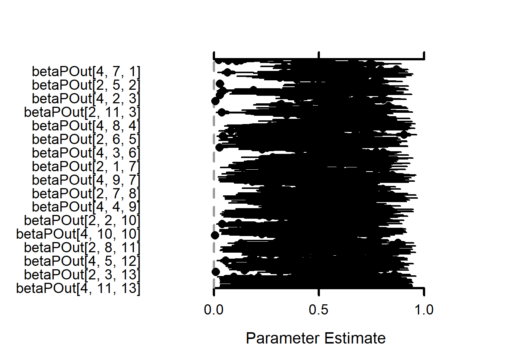
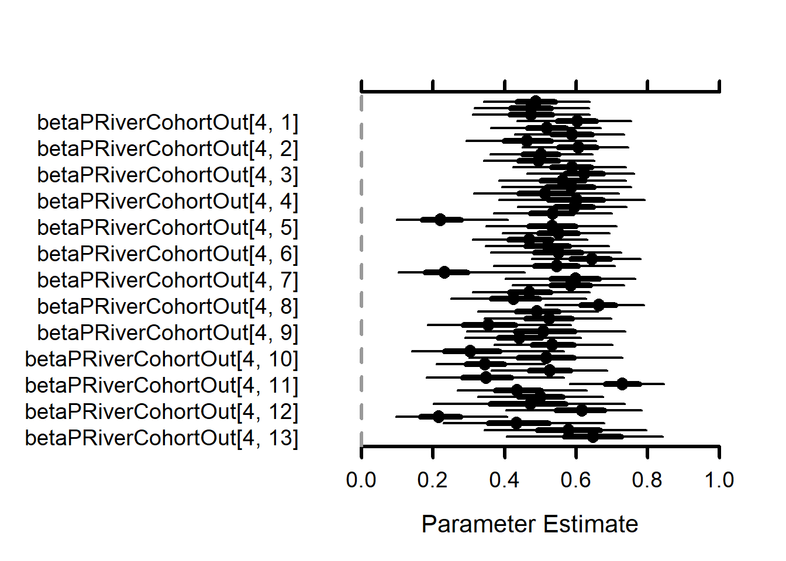

11 Flow effects on survival (phi) models - 4 rivers
The goal of this modelling exercise is to evaluate the effect of new tributary-specific stream flow estimates on survival of brook trout and brown trout. We will compare survival across the WB and tributaries with flow input data as 1) single flow estimate for all locations (historical approach) and 2) hindcasted flows for each tributary based on new tributary-specific flows which are available since 2000.
The goal is to find the best structure for the survival model, then compare survival estimates with tributary-specific flow to estimates with common flow across locations.
Structure options include [species, cohort, season, isYOY, flow, flow^2]
11.0.0.1 Load pre-run model
This model is too big (88 Gb) and needs to be run on workbench
Output files are here: “C:- DOI-book4rivers”
# Following https://oliviergimenez.github.io/bayesian-cr-workshop/worksheets/4_demo.html
toSave <- tar_read(toSave_ttt_WB_target)
MCMCplot(object = toSave$mcmc, params = "betaPhiOut") MCMCplot(object = toSave$mcmc, params = "betaPhiRiverOut")# MCMCplot(object = toSave$mcmc, params = c("betaPhiRiverCohortOut")) MCMCplot(object = toSave$mcmc, params = "betaPOut")
MCMCplot(object = toSave$mcmc, params = "betaPRiverOut")# 
MCMCplot(object = toSave$mcmc, params = c("betaPRiverCohortOut"))
MCMCplot(object = toSave$mcmc, params = c("psi")) priors <- rnorm(toSave$nIter * toSave$nChains, 0, 1/sqrt(.1))
MCMCtrace(object = toSave$mcmc,
#ISB = FALSE,
#exact = TRUE,
params = c("betaPhiRiverOut"),
pdf = FALSE,
priors = priors)

priors <- runif(toSave$nIter * toSave$nChains, 0, 1)
MCMCtrace(object = toSave$mcmc,
#ISB = FALSE,
#exact = TRUE,
params = c("betaPhiRiverCohortOut"),
pdf = FALSE,
priors = priors)


priors <- runif(toSave$nIter * toSave$nChains, 0, 1)
MCMCtrace(object = toSave$mcmc,
ISB = FALSE,
exact = TRUE,
params = c("psi[1, 1, 4, 4]", "psi[1, 2, 4, 4]", "psi[1, 3, 4, 4]", "psi[1, 4, 4, 4]",
"psi[2, 1, 4, 4]", "psi[2, 2, 4, 4]", "psi[2, 3, 4, 4]", "psi[2, 4, 4, 4]"),
pdf = FALSE,
priors = priors)


Code from westBrook-book Needs to be run on workBench
# copy code below into workbench for model runs
# Put zipped output into ./models/cmrFlow4rivers/runsOut/fromWorkbench/rstudio-export.zip and then unzip
if(!useWorkbenchRuns) {
# Following https://oliviergimenez.github.io/bayesian-cr-workshop/worksheets/5_demo.html
if (rerunSurivalModels) {
y <- eh$eh * eh$riverN
(nCohorts <- nrow(unique(eh$cohorts)))
(nSeasons <- nrow(unique(eh$seasons)))
(nRivers <- length(unique(eh$data$riverN)))# rivers 1:4
seasonArray <- c(3,4,1,2,3,4,1,2,3,4,1,2)
first <- eh$first #apply(y, 1, function(x) min(which(x !=0)))
last <- eh$last
cohort = ((eh$cohorts) - min(eh$cohorts) + 1)$cohort #can't be a data frame or tibble
zinits <- y + 1 # non-detection -> alive
zinits[zinits == 2] <- 1 # dead -> alive
zInitsNA <- ifelse(is.na(eh$flow), NA, 1)
# Proportion of fish in each river on the first observation
y1 <- y[,1]
deltaProps <- table(y1[y1>0]) / length(y1[y1>0])
# alpha for the dirichlet prior
alpha <- c(1,1,1,1)
# fill in entries for dirichlet priors where a[r,,t,c] sums to 1 for any r,t,c combo
getDirchPriors <- function(nRivers,myConstants, nCohorts, alpha){
a = array(rep(0, nRivers * nRivers * (myConstants$T - 1) * nCohorts) , c(nRivers, nRivers, (myConstants$T - 1), nCohorts ))
for(r in 1:nRivers){
for(t in 1:(myConstants$T - 1)){
for (c in 1:nCohorts){
dirch <- rdirch(1, alpha)
for (r2 in 1:nRivers){
a[r,r2,t,c] <- dirch[r2]
}
}
}
}
return(a)
}
# Priors for psi where more likely to stay than move
alphaR <- list()
alphaR[[1]] <- alphaR1 <- c(0.7, 0.1, 0.1, 0.1)
alphaR[[2]] <- alphaR2 <- c(0.1, 0.7, 0.1, 0.1)
alphaR[[3]] <- alphaR3 <- c(0.1, 0.1, 0.7, 0.1)
alphaR[[4]] <- alphaR4 <- c(0.1, 0.1, 0.1, 0.7)
getDirchPriorsR <- function(nRivers,myConstants, nCohorts, alpha){
a = array(rep(0, nRivers * nRivers * (myConstants$T - 1) * nCohorts) , c(nRivers, nRivers, (myConstants$T - 1), nCohorts ))
for(r in 1:nRivers){
for(t in 1:(myConstants$T - 1)){
for (c in 1:nCohorts){
dirch <- rdirch(1, alphaR[[r]])
for (r2 in 1:nRivers){
a[r,r2,t,c] <- dirch[r2]
}
}
}
}
return(a)
}
#psi = getDirchPriorsR(nRivers, myConstants, nCohorts, alpha)
# For 3 states, we are using 4
# -------------------------------------------------
# Parameters for 3 sites (A, B, C):
# phiA: survival probability site A
# phiB: survival probability site B
# phiC: survival probability site B
# psiAA: movement probability from site A to site A (reference)
# psiAB = psiA[1]: movement probability from site A to site B
# psiAC = psiA[2]: movement probability from site A to site C
# psiBA = psiB[1]: movement probability from site B to site A
# psiBB: movement probability from site B to site B (reference)
# psiBC = psiB[2]: movement probability from site B to site C
# psiCA = psiC[1]: movement probability from site C to site A
# psiCB = psiC[2]: movement probability from site C to site B
# psiCC: movement probability from site C to site C (reference)
# pA: recapture probability site A
# pB: recapture probability site B
# pC: recapture probability site C
# -------------------------------------------------
# States (z):
# 1 alive at A
# 2 alive at B
# 3 alive at C
# 4 alive at D
# 5 dead
# Observations (y):
# 1 not seen
# 2 seen at A
# 3 seen at B
# 4 seen at C
# 5 seen at D
# river names: c("west brook" = 1, "wb jimmy" = 2, "wb mitchell" = 3, "wb obear" = 4)
# -------------------------------------------------
## model code using DHMMo distribution
hmm.phiT_pT_psiT_DHMM_dirch <- nimbleCode({
# Initial distribution among rivers
delta[1] <- deltaProps[1] # Pr(alive t = 1 and in river 1) = 0.4
delta[2] <- deltaProps[2]
delta[3] <- deltaProps[3]
delta[4] <- deltaProps[4]
delta[5] <- 0 # Pr(dead t = 1) = 0
for (r in 1:nRivers){
betaPhiRiver[r] ~ dnorm(0,sd = 1)
betaPRiver[r] ~ dnorm(0,sd = 1)
betaPhiRiverOut[r] <- ilogit(betaPhiRiver[r])
betaPRiverOut[r] <- ilogit(betaPRiver[r])
for (c in 1:nCohorts){
betaPhiRiverCohort[r,c] ~ dnorm(betaPhiRiver[r], sd = 1)
betaPRiverCohort[r,c] ~ dnorm(betaPRiver[r], sd = 1)
betaPhiRiverCohortOut[r,c] <- ilogit(betaPhiRiverCohort[r,c])
betaPRiverCohortOut[r,c] <- ilogit(betaPRiverCohort[r,c])
for (t in 1:(T-1)){
betaPhi[r,t,c] ~ dnorm(betaPhiRiverCohort[r,c], sd = 1)
betaP[r,t,c] ~ dnorm(betaPRiverCohort[r,c], sd = 1)
betaPhiOut[r,t,c] <- ilogit(betaPhi[r,t,c])
betaPOut[r,t,c] <- ilogit(betaP[r,t,c])
# move from river 'r' to one of river 1:nRivers
# Nice description of effect of 'alpha' on probabilities:
# https://stats.stackexchange.com/questions/244917/what-exactly-is-the-alpha-in-the-dirichlet-distribution
#psi[r,1:nRivers,t,c] ~ ddirch(alpha[[r]][1:nRivers])
}
}
}
for (t in 1:(T-1)){ # loop over time
for (c in 1:nCohorts){
psi[1,1:nRivers,t,c] ~ ddirch(alphaR1[1:nRivers])
psi[2,1:nRivers,t,c] ~ ddirch(alphaR2[1:nRivers])
psi[3,1:nRivers,t,c] ~ ddirch(alphaR3[1:nRivers])
psi[4,1:nRivers,t,c] ~ ddirch(alphaR4[1:nRivers])
}
}
for (t in 1:(T-1)){ # loop over time
for (c in 1:nCohorts){
gamma[1,1,t,c] <- ilogit(betaPhi[1,t,c]) * psi[1,1,t,c]
gamma[1,2,t,c] <- ilogit(betaPhi[1,t,c]) * psi[1,2,t,c]
gamma[1,3,t,c] <- ilogit(betaPhi[1,t,c]) * psi[1,3,t,c]
gamma[1,4,t,c] <- ilogit(betaPhi[1,t,c]) * psi[1,4,t,c]
gamma[1,5,t,c] <- 1 - ilogit(betaPhi[1,t,c])
gamma[2,1,t,c] <- ilogit(betaPhi[2,t,c]) * psi[2,1,t,c]
gamma[2,2,t,c] <- ilogit(betaPhi[2,t,c]) * psi[2,2,t,c]
gamma[2,3,t,c] <- ilogit(betaPhi[2,t,c]) * psi[2,3,t,c]
gamma[2,4,t,c] <- ilogit(betaPhi[2,t,c]) * psi[2,4,t,c]
gamma[2,5,t,c] <- 1 - ilogit(betaPhi[2,t,c])
gamma[3,1,t,c] <- ilogit(betaPhi[3,t,c]) * psi[3,1,t,c]
gamma[3,2,t,c] <- ilogit(betaPhi[3,t,c]) * psi[3,2,t,c]
gamma[3,3,t,c] <- ilogit(betaPhi[3,t,c]) * psi[3,3,t,c]
gamma[3,4,t,c] <- ilogit(betaPhi[3,t,c]) * psi[3,4,t,c]
gamma[3,5,t,c] <- 1 - ilogit(betaPhi[3,t,c])
gamma[4,1,t,c] <- ilogit(betaPhi[4,t,c]) * psi[4,1,t,c]
gamma[4,2,t,c] <- ilogit(betaPhi[4,t,c]) * psi[4,2,t,c]
gamma[4,3,t,c] <- ilogit(betaPhi[4,t,c]) * psi[4,3,t,c]
gamma[4,4,t,c] <- ilogit(betaPhi[4,t,c]) * psi[4,4,t,c]
gamma[4,5,t,c] <- 1 - ilogit(betaPhi[4,t,c])
gamma[5,1,t,c] <- 0
gamma[5,2,t,c] <- 0
gamma[5,3,t,c] <- 0
gamma[5,4,t,c] <- 0
gamma[5,5,t,c] <- 1
}
}
# gamma for the last occasion
for (c in 1:nCohorts){
for (a in 1:(nRivers+1)){
for (b in 1:nRivers){
gamma[a,b,T,c] <- 0
}
gamma[a,5,T,c] <- 1
}
}
for (i in 1:N){ # loop over individuals
# omega for first obs
omega[1,1,first[i],i] <- 0 # Pr(alive A t -> non-detected t)
omega[1,2,first[i],i] <- 1 # Pr(alive A t -> detected A t)
omega[1,3,first[i],i] <- 0 # Pr(alive A t -> detected B t)
omega[1,4,first[i],i] <- 0 # Pr(alive A t -> detected C t)
omega[1,5,first[i],i] <- 0 # Pr(alive A t -> detected D t)
omega[2,1,first[i],i] <- 0 # Pr(alive B t -> non-detected t)
omega[2,2,first[i],i] <- 0 # Pr(alive B t -> detected A t)
omega[2,3,first[i],i] <- 1 # Pr(alive B t -> detected B t)
omega[2,4,first[i],i] <- 0 # Pr(alive B t -> detected C t)
omega[2,5,first[i],i] <- 0 # Pr(alive B t -> detected C t)
omega[3,1,first[i],i] <- 0 # Pr(alive C t -> non-detected t)
omega[3,2,first[i],i] <- 0 # Pr(alive C t -> detected A t)
omega[3,3,first[i],i] <- 0 # Pr(alive C t -> detected B t)
omega[3,4,first[i],i] <- 1 # Pr(alive C t -> detected C t)
omega[3,5,first[i],i] <- 0 # Pr(alive C t -> detected C t)
omega[4,1,first[i],i] <- 0 # Pr(dead t -> non-detected t)
omega[4,2,first[i],i] <- 0 # Pr(dead t -> detected A t)
omega[4,3,first[i],i] <- 0 # Pr(dead t -> detected B t)
omega[4,4,first[i],i] <- 0 # Pr(dead t -> detected C t)
omega[4,5,first[i],i] <- 1 # Pr(dead t -> detected C t)
omega[5,1,first[i],i] <- 1 # Pr(dead t -> non-detected t)
omega[5,2,first[i],i] <- 0 # Pr(dead t -> detected A t)
omega[5,3,first[i],i] <- 0 # Pr(dead t -> detected B t)
omega[5,4,first[i],i] <- 0 # Pr(dead t -> detected C t)
omega[5,5,first[i],i] <- 0 # Pr(dead t -> detected D t)
## DT changes:
## time t > first[i]:
for(t in (first[i]+1):last[i]) {
logit(pA[t,i]) <- betaP[1,t-1,cohort[i]]
logit(pB[t,i]) <- betaP[2,t-1,cohort[i]]
logit(pC[t,i]) <- betaP[3,t-1,cohort[i]]
logit(pD[t,i]) <- betaP[4,t-1,cohort[i]]
# probabilities of y(t) given z(t)
# omega[z, y, t, i]
# z=1 = alive in River 1, z=2 = alive in River 2...z=5 = dead
# y=1 = unobserved, y=2 = observed in River 1, y=3 = observed in River 2, etc
omega[1,1,t,i] <- 1 - pA[t,i] # Pr(alive A t -> non-detected t)
omega[1,2,t,i] <- pA[t,i] # Pr(alive A t -> detected A t)
omega[1,3,t,i] <- 0 # Pr(alive A t -> detected B t)
omega[1,4,t,i] <- 0 # Pr(alive A t -> detected C t)
omega[1,5,t,i] <- 0 # Pr(alive A t -> detected D t)
omega[2,1,t,i] <- 1 - pB[t,i] # Pr(alive B t -> non-detected t)
omega[2,2,t,i] <- 0 # Pr(alive B t -> detected A t)
omega[2,3,t,i] <- pB[t,i] # Pr(alive B t -> detected B t)
omega[2,4,t,i] <- 0 # Pr(alive B t -> detected C t)
omega[2,5,t,i] <- 0 # Pr(alive B t -> detected C t)
omega[3,1,t,i] <- 1 - pC[t,i] # Pr(alive C t -> non-detected t)
omega[3,2,t,i] <- 0 # Pr(alive C t -> detected A t)
omega[3,3,t,i] <- 0 # Pr(alive C t -> detected B t)
omega[3,4,t,i] <- pC[t,i] # Pr(alive C t -> detected C t)
omega[3,5,t,i] <- 0 # Pr(alive C t -> detected C t)
omega[4,1,t,i] <- 1 - pD[t,i] # Pr(alive D t -> non-detected t))
omega[4,2,t,i] <- 0 # Pr(dead D t -> detected A t)
omega[4,3,t,i] <- 0 # Pr(dead D t -> detected B t)
omega[4,4,t,i] <- 0 # Pr(dead D t -> detected C t)
omega[4,5,t,i] <- pD[t,i] # Pr(alive D t -> detected D t)
omega[5,1,t,i] <- 1 # Pr(dead t -> non-detected t)
omega[5,2,t,i] <- 0 # Pr(dead t -> detected A t)
omega[5,3,t,i] <- 0 # Pr(dead t -> detected B t)
omega[5,4,t,i] <- 0 # Pr(dead t -> detected C t)
omega[5,5,t,i] <- 0 # Pr(dead t -> detected D t)
}
} # i loop
for (i in 1:N){
y[i,first[i]:last[i]] ~ dDHMMo(init = delta[1:5],
probTrans = gamma[1:5, 1:5, first[i]:last[i], cohort[i]],
probObs = omega[1:5, 1:5, first[i]:last[i], i],
len = length[i],
checkRowSums = 1)
}
})
##
myConstants0 <- list(N = nrow(y),
T = ncol(y),
first = first,
last = last,
cohort = cohort,
nCohorts = nCohorts,
nRivers = nRivers,
season = seasonArray,
# flow = eh$flow,
length = last - first + 1,
alpha = alpha,
deltaProps = deltaProps
)
## DT changes:
myData0 <- list(###yCJS = eh$eh, #y, ## data for CJS distribution
y = y + 1
) ## data for DHMM distribution
## if you change this FALSE to TRUE
## this makes the dataset smaller - only 200 observations,
## for quicker testing
if(FALSE) {
newN <- 20
oldN <- dim(y)[1]
set.seed(0)
indToKeep <- sample(1:oldN, size = newN, replace = FALSE)
}
## this removes fish that were only observed on the very last observation
if(TRUE) {
indToKeep <- which(first < ncol(y))
newN <- length(indToKeep)
}
myConstants <- list(
N = newN,
T = myConstants0$T,
first = myConstants0$first[indToKeep],
last = myConstants0$last[indToKeep],
nRivers = myConstants0$nRivers,
cohort = myConstants0$cohort[indToKeep],
nCohorts = myConstants0$nCohorts,
# season = myConstants$season,
# flow = myConstants$flow[indToKeep,],
length = myConstants0$length[indToKeep],
alpha = myConstants0$alpha,
deltaProps = deltaProps
)
myData <- list(
##yCJS = myData0$yCJS[indToKeep,],
y = myData0$y[indToKeep,]
)
initialValues <- function(){
list(
betaPhiRiver = array(runif(nRivers, 0, 1), c(nRivers)),
betaPhiRiverCohort = array(runif(nRivers * nCohorts, 0, 1), c(nRivers, nCohorts)),
betaPhi = array(rnorm(nRivers * (myConstants$T - 1) * nCohorts , 0, 1), c(nRivers, (myConstants$T - 1), nCohorts)),
betaPRiver = array(runif(nRivers, 0, 1), c(nRivers)),
betaPRiverCohort = array(runif(nRivers * nCohorts, 0, 1), c(nRivers, nCohorts)),
betaP = array(rnorm(nRivers * (myConstants$T - 1) * nCohorts , 0, 1), c(nRivers, (myConstants$T - 1), nCohorts)),
psi = getDirchPriorsR(nRivers, myConstants, nCohorts, alphaR)
)
}
set.seed(0)
start = Sys.time()
## you'll get warnings that the data 'yCJS' is not used, and the 'z' initial
## values are not in the model. Those don't cause any problems,
## and let us use the same myData and initialValue() for both models.
system.time(
Rmodel <- nimbleModel(
code = hmm.phiT_pT_psiT_DHMM_dirch,
constants = myConstants,
data = myData,
inits = initialValues(),
calculate = FALSE
)
)
#Rmodel$calculate()
parametersToSave <- c("betaPhi", "betaPhiRiver", "betaPhiRiverCohort",
"betaP", "betaPRiver", "betaPRiverCohort",
"betaPhiOut", "betaPhiRiverOut", "betaPhiRiverCohortOut",
"betaPOut", "betaPRiverOut", "betaPRiverCohortOut",
"psi"
)
nIter <- 15000 #30000
nBurnin <- 5000 #15000
nChains <- 2
thinRate <- 5
rm(conf, Rmcmc, Cmodel, Cmcmc) # so old versions don't run if there is an error in an earlier step
system.time(
conf <- configureMCMC(
Rmodel,
monitors = parametersToSave
)
)
Rmcmc <- buildMCMC(conf, useConjugacy = FALSE)
Cmodel <- compileNimble(Rmodel)
Cmcmc <- compileNimble(Rmcmc, project = Rmodel)
mcmc.phiT_pT_psiT_DHMM_dirch <- runMCMC(
Cmcmc,
niter = nIter,
nburnin = nBurnin,
thin = thinRate,
nchains = nChains
)
end <- Sys.time()
elapsed_phiT_pT_psiT_DHMM_dirch <- end - start
toSave <- list(
mcmc = mcmc.phiT_pT_psiT_DHMM_dirch,
elapsed = elapsed_phiT_pT_psiT_DHMM_dirch,
name = "phiT_pT_psiT_DHMM_dirch",
myConstants = myConstants,
nIter = nIter,
nBurnin = nBurnin,
thinRate = thinRate,
nSeasons = nSeasons,
nCohorts = nCohorts,
nChains = nChains
)
save(toSave, file = paste0('./models/cmrFlow4rivers/runsOut/mcmc_phiT_pT_psiT_DHMM_dirch_', substr(end,1,13), '.RData'))
save(toSave, file = './models/cmrFlow4rivers/runsOut/mcmc_phiT_pT_psiT_DHMM_dirch_mostRecent.RData')
# conduct more runs, will need to save into 'toSave'
# Cmcmc$run(5000, reset = FALSE)
} else {
load('./models/cmrFlow4rivers/runsOut/mcmc_phiT_pT_psiT_DHMM_dirch_mostRecent.RData')
}
} else {
load('./models/cmrFlow4rivers/runsOut/fromWorkbench/rstudio-export/mcmc_phiT_pT_psiT_DHMM_dirch_mostRecent.RData')
}